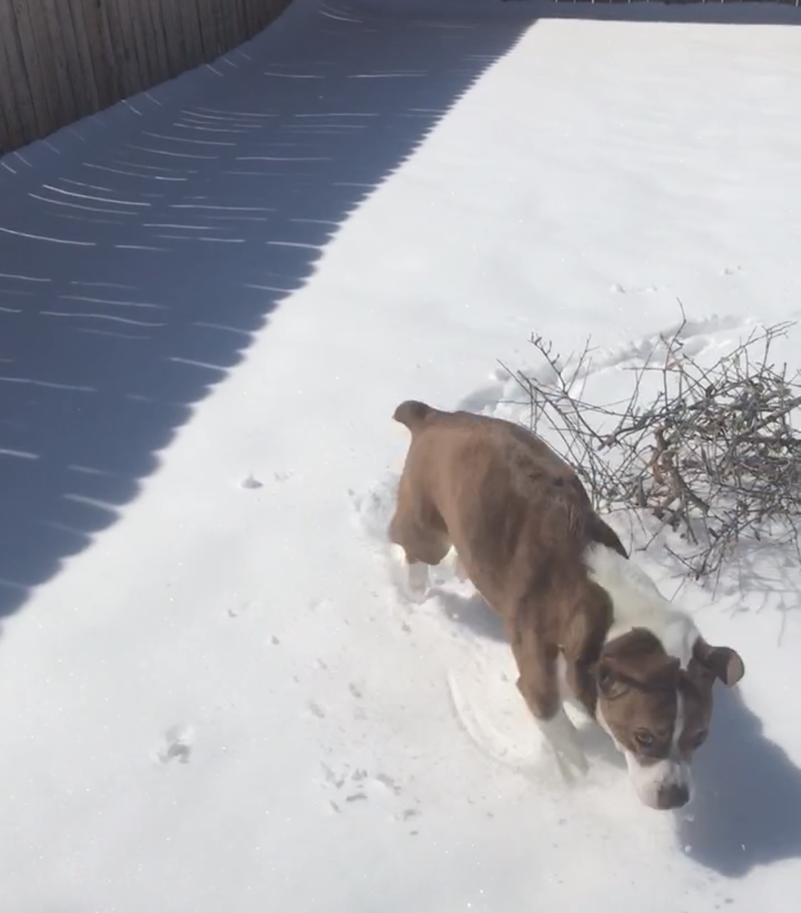
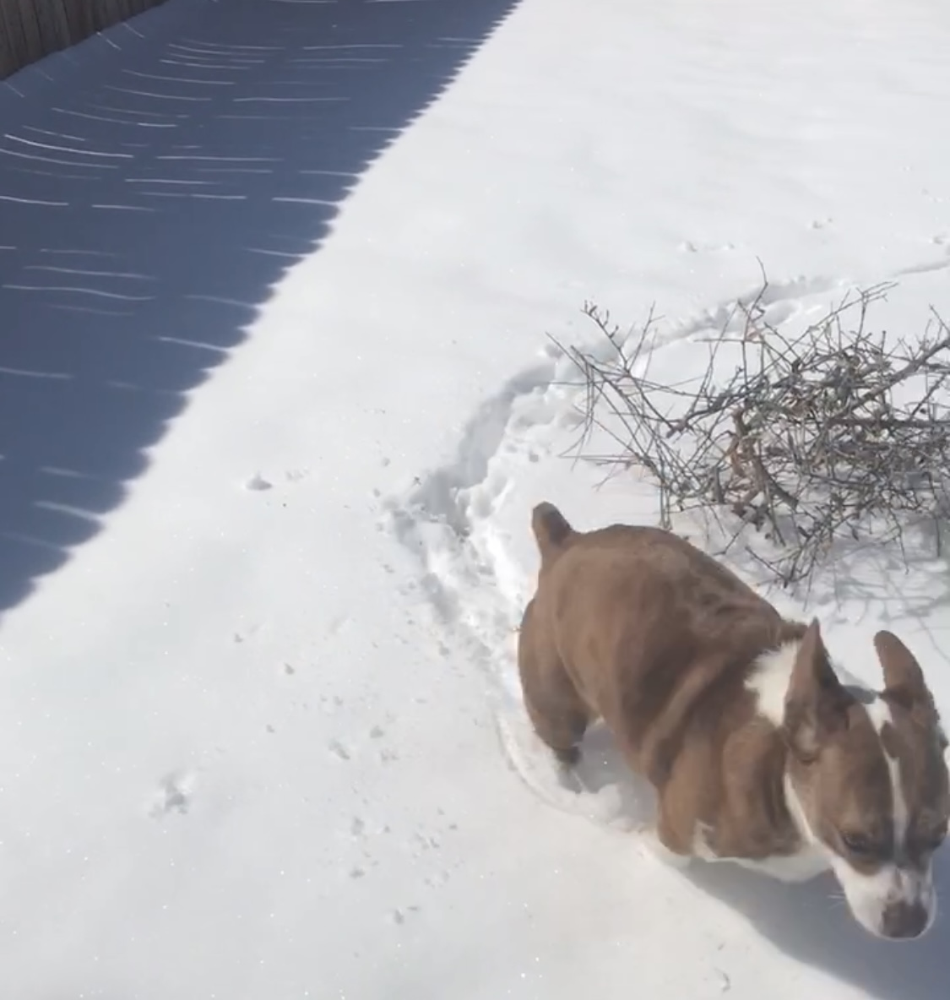
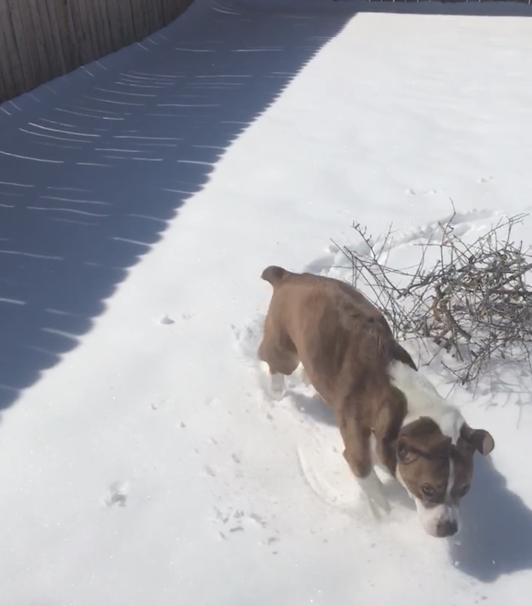
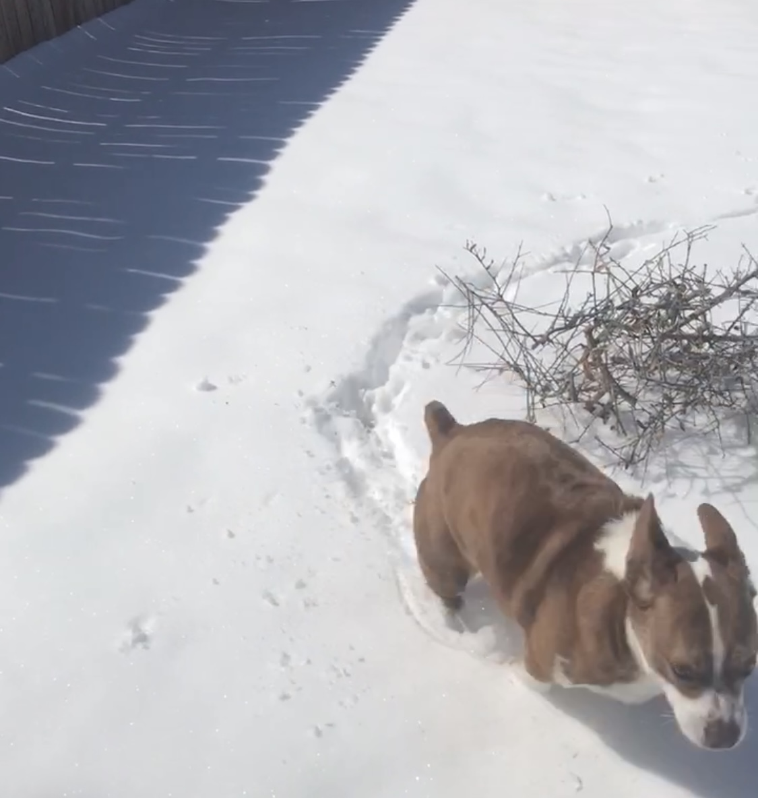

One of my Corgi mix's favorite toys is a bacon scented textured bone. The texture on the bone helps to clean his teeth and the scent keeps his attention and keeps him from getting bored with the toy. He also has a ball and a three-sided toy that are also scented. They give him a bit of variety and also help maintain the toys' longevity.
Interactive toys such as balls and sniff mats help keep my dog active through engagement and exercise. They also provide the opportunity to bond with him by playing a game of catch or kicking around his oversized ball around the backyard with him.
 


